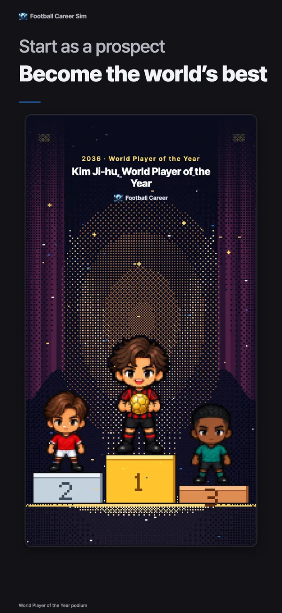
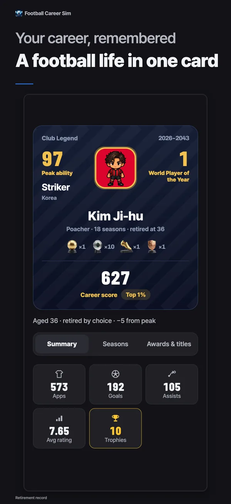
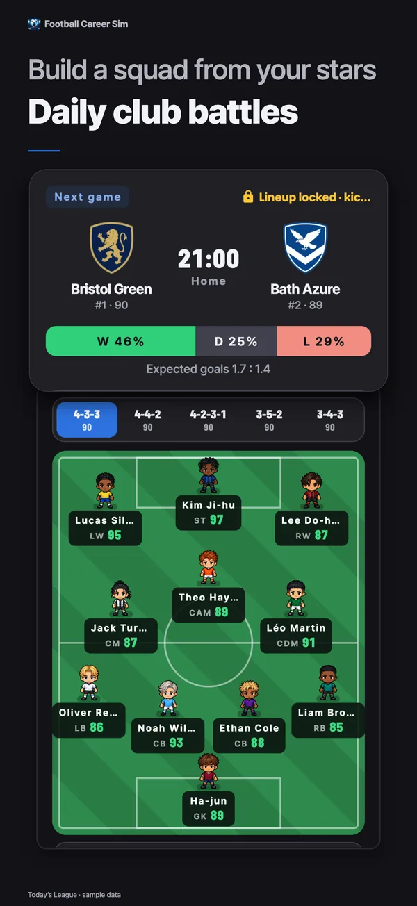
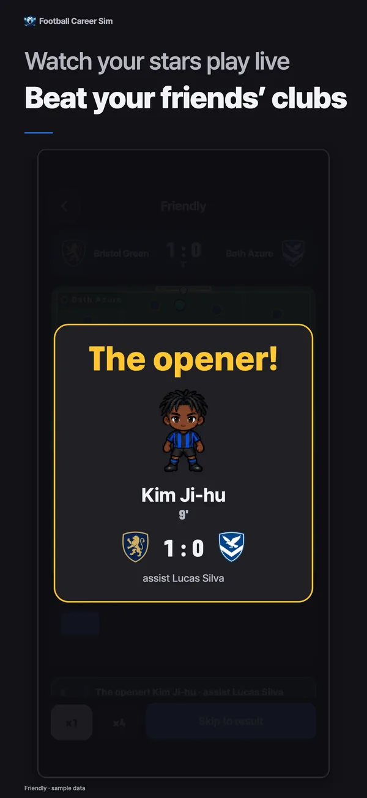
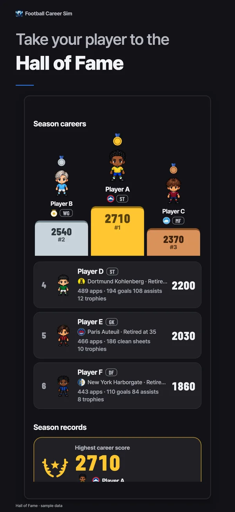
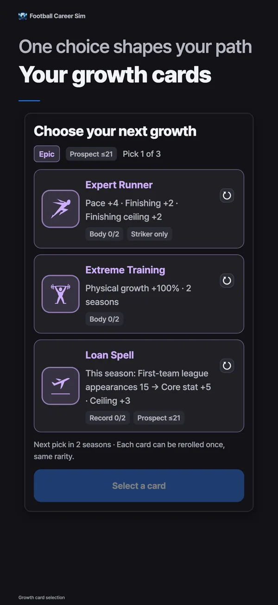

- YT Lab
- Football Career Sim: Be a Pro

Football Career Sim: Be a Pro One player’s whole career, from seventeen to your last season
Football Career Sim is a mobile football (soccer) career simulation by YT Lab. A seventeen-year-old from the academy fights for a place off the bench, moves clubs, earns a national team call-up and decides when to retire. Growth Cards picked every two seasons change that path, and retired players become the squad of your club in the Weekly League.
Choose your next growth
27-year-old Striker OVR 96Reroll each card once. Its rarity stays the same.
These are the app’s actual cards and calculations: the moment a 27-year-old star Striker draws the rarest round, Legend. Rerolls and the next draws use the app’s own card pools and odds, and every demo round starts with the same player.


Free to download, with in-app purchases. Available on iPhone and iPad with iOS 15 or later, and Android 7.0 or later.
Want to try it before installing? Start playing in your browser
Every two seasons. Three cards. One choice.
Your stats grow automatically as you play. Growth Cards add a choice on top. At the start and every two seasons after that, choose one of three cards of the same rarity, each from a different family. Higher rarities have stronger effects, and your first pick is guaranteed to be Epic.
An instant boost
Your stats rise as soon as you pick. Focus Pays Off gives a core stat +6 and its ceiling +3. Fill the Gaps adds 4 each to your lowest core and support stats.
Room to grow
Every stat has a hidden ceiling where automatic growth stops. A Little Potential, Open Potential and Potential Breakthrough push that ceiling higher. Cards can raise it to 95.
Rewards you earn on the pitch
Goal Hunter gives Finishing +1 for every 5 goals. Star of the Match adds +2 to a stat for every 2 MOM awards. Ready to Rise gives a core stat +8 after 30 appearances. You have to earn it.
Give something to gain something
Explosive Sprint trades Aerial −3 for Pace +8. Devilish Talent gives a core ceiling +12 and stat +10, at the cost of a support stat −3. Every gain has a price.
More time on the pitch
Second Prime halves aging for three seasons and extends your career by 2 years. Last Flame adds +6 to three core stats, but you retire at the end of that season.
Free rerolls
Don’t like a card? Reroll it individually. The rarity stays the same, and the new card won’t share a family with the other two.
From the bench to the Ballon d’Or
You don’t start as a top-flight regular. Work through the Academy and Reserves, earn your place from the first-team bench, and aim for World Player of the Year, awarded to the world’s best player each season. Your card choices and season records decide how far you go.
- 17years old
Academy
Start in the Academy at seventeen. The Youth Start Pack lets you begin at fifteen.
- 19by this age
Reserves
Move up to the Reserves when you approach first-team level or turn nineteen. Promotions are decided at the end of the season.
- 16–21debut by league
From the first-team bench to the starting lineup
Debut ages vary by league. Meet the age, ability and season rating requirements to reach the first team. Manager Trust determines your playing time.
- Summerafter the season
Transfers and new contracts
Request a transfer or choose an offer, then work with your agent to negotiate wages and clauses such as a Starter's promise or Buy-out clause.
- 18+in the first team
National Team
First-team players aged eighteen or older are eligible for a national call-up. The World Tournament and continental championships alternate every two years.
- 36–41by position
Retirement, and what stays with you
By default, Wingers play until 36 and Goalkeepers until 41. Cards and events can extend your career, and you can also choose to retire earlier.
Retired players become your club
Keep a retired player in your archive and they join your club’s squad in the Weekly League. Set the formation and tactics with the players you raised and take on other clubs every week. No retired players yet? You can enter with default players.
A season in a week
Prepare your squad on Monday and play the league Tuesday to Friday. Saturday is the cup group stage and Sunday the knockouts.
Climb the divisions
Each week’s results decide promotion and relegation. Start in the lower divisions and climb to World Class.
Friend matches
Add friends by code, pick a formation and tactics, and play friendlies. Lost? Get it back with a revenge match.
Daily Challenge
Everyone gets the same player, develops them for eight seasons and competes for the top score before the board closes.
Play a month. See how far you’ve grown.
A season runs for ten months, from August to May, with 38 matches. Appearances, goals, assists, clean sheets, MOM awards and ratings feed into your monthly growth, with every stat change shown in numbers. Advance a month at a time or let the season run automatically.
Monthly growthDribbling 57 → 58 +1
A strong month can earn Player of the Month, Team of the Month, or Save of the Month for Goalkeepers. Your record decides, with no hidden draw. At season’s end, aim for Top Scorer, Team of the Season, Player of the Year, and even World Player of the Year.
Inside the game






A different kind of football game
One player’s career
A player career has no squad screen, tactics board or transfer budget. Your manager gives you playing time, and a new manager may want a different kind of player. Running a club happens separately, in the Weekly League.
See the odds before you choose
In situations during the season, each choice shows the odds of three outcomes as bars and percentages before you decide. You can also see how your stats, Manager Trust, Condition and Growth Cards have shifted those odds.
A different career in every league
From England, Spain, Germany, Italy and France to Korea, Japan and South America. Debut ages, wages and foreign-player quotas vary by league. All league, club, player and manager names are fictional.
Your records live on
Keep your career totals and a six-axis assessment of Quality, Output, Volume, Awards, Trophies and Stage. See where you rank in the overall distribution of careers. Completed careers enter the season player ranking and the Hall of Fame.
Frequently asked questions
- Is it free?
- It’s free to download and play all the way to retirement. Growth Cards and their rerolls are free too. Optional purchases include Remove Ads, Position Pack, Youth Start Pack, Supporter Pack, Gold and Reroll Tickets. Starting stat rolls have the same odds whether you use a free roll, an ad or a Reroll Ticket.
- Can I play offline?
- Your career runs and saves on your device, so you can play offline. Rankings, the Weekly League, friend matches, Daily Challenge, purchases, spending Gold and device transfers need an internet connection.
- Can I play on PC or in a browser?
- The full game, through to retirement, is an app for iPhone, iPad and Android. On a PC or phone browser, the web trial lets you play the first five seasons of the same game free, with no install.
- Which positions can I play?
- Goalkeeper, Defender, Midfielder, Winger and Striker. Goalkeeper and Striker are free; the Position Pack unlocks the other three. Each position has seven playstyles, for 35 in total, all free.
- How many careers can I play at once?
- Three career slots let you develop three players at once. Your nationality sets your national team, and you choose your starting club from home and overseas offers.
- Are there real players or clubs?
- No. All leagues, clubs, players and managers in the game are fictional.
- Will my name appear in the rankings?
- Completed careers appear in the rankings, but you can opt out at any time. Custom names are only made public with your consent.